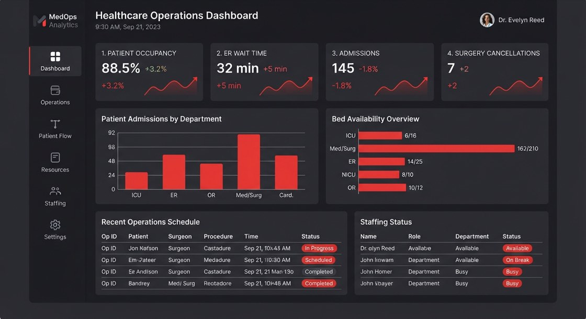
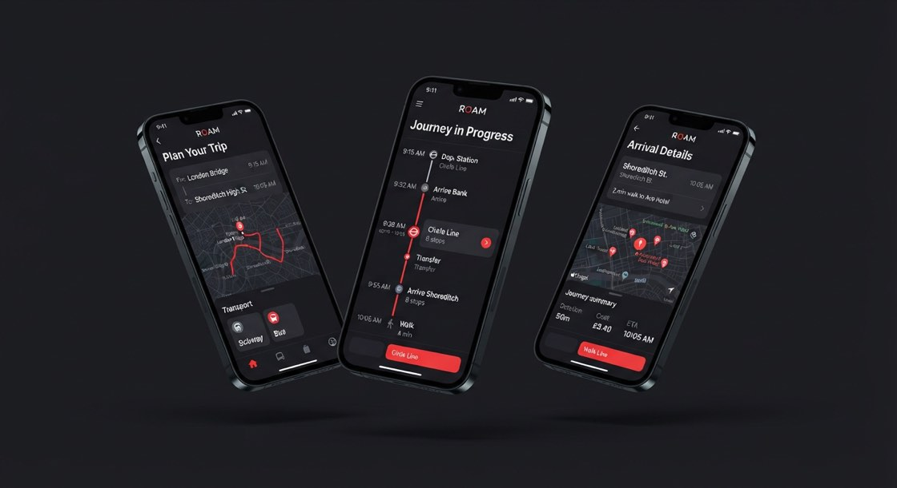

PULSE 健康数据中台
为医院运营团队设计的数据决策中台，把 14 个模块的信息层级重新排布。
查看案例 ↗从真实问题出发，通过系统思考与高保真原型，将洞察转化为可验证的产品体验。

对齐业务目标、约束条件（研发成本、跨端差异、产品特性），区分「功能需求」和「真实用户诉求」 AI 参与：需求文档草案、竞品信息汇总、访谈提纲生成、提炼目标/风险/约束
访谈核心用户、定性研究、共情理解，识别隐性需求、挖掘真实痛点，基于研究结论收敛问题 AI 参与：转录访谈录音、整理问卷数据、生成用户画像、用户旅程初稿，模拟不同用户角色陈述问题，提前预判负面体验
搭建信息架构、主流程分支，把控信息层级、减法设计，砍掉不必要步骤，基于设计理念筛选方向，排除不合理方案 AI 参与：多方案头脑风暴、场景推演，生成流程图初稿、信息结构建议、交互文案批量生成
通过VibeCoding把原型转成可直接运行的前端Demo，组织用户测试、方案取舍决策 AI 参与：辅助生成DEMO，可用性问题预排查、多版本对比、注释整理
根据项目内容编写 design.md ，把视觉交互约束、验收标准写清楚，保证团队对齐、AI 生成可控、设计决策可追溯 AI 参与：Agent 将 design.md 作为项目设计契约、约束边界，完成方案生成、校验、自检。
使用 skill.md 沉淀跨项目复用的 UX/AX 设计范式、组件基线、交互约束，作为 Agent 与 VibeCoding 的默认能力包 AI 参与：Agent 将 skill.md 作为通用设计基线，统一设计原则、交互范式与规则。
组织产研评审，对齐研发、测试，做设计走查，守住体验底线 AI 参与：整理评审意见，归类问题、生成待办清单；自动检查文案一致性
埋点指标解读、回访用户，判断体验是否达成目标，识别新痛点 AI 参与：汇总用户反馈、客服工单、行为数据，自动聚类问题；生成迭代方向初稿
界面做减法，体验做加法，AI工具辅助验证。 我理解的少即是多，不是空洞的删减，而是对复杂度的重新分配：把繁杂的选项、冗余信息、分支判断交给 AI 能力在后台消化；面向用户的交互界面，只交付当下任务所必需的信息与操作。
通过 AI 聚类用户行为，识别低频、冗余功能，将次要能力收拢到二级入口，只保留核心任务路径
默认呈现最简结果，复杂参数、深度信息按需展开，避免一次性轰炸用户认知
视觉克制，移除装饰性元素，依靠网格、排版、留白建立层级；动效仅用于反馈，拒绝无意义视觉噪音
简化交互的同时保留用户控制权，AI 的自动输出支持修改、回退、查看依据，极简但不失去掌控
拥有 14 年互联网行业经验，其中 8 年深耕交互与用户体验设计、6 年 UX 团队管理经验。曾参与智慧教学、AI 工具、银行服务产品、艺术品商城等项目。我擅长把复杂系统翻译成清晰的用户路径，并用高保真交互原型推动团队形成共识。